Field instruments
Play the air in front of the camera like a theremin: your hands choose the pitch and the loudness, and each instrument changes what the fingers, the face and the open hand do.

Bell & Strings
Raise both hands.
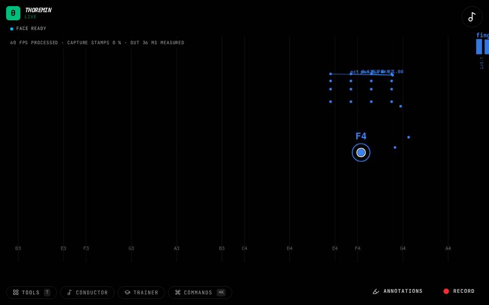
Everything
Play notes with your wrist.
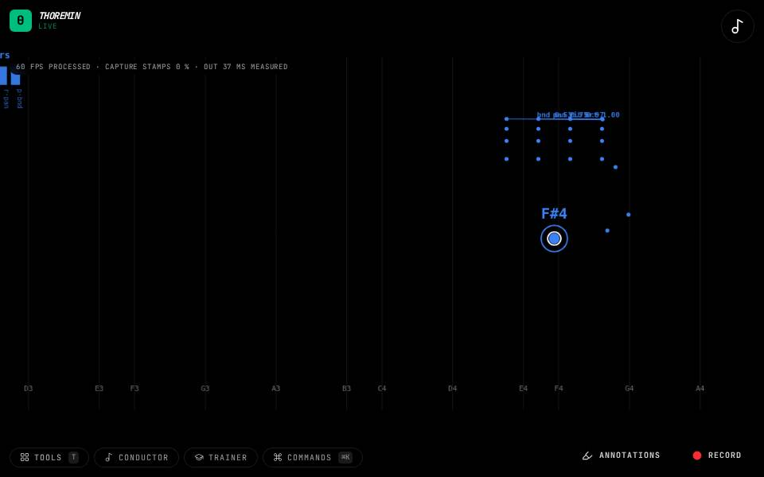
Finger Cues
Hold a hand up so all your fingers show.
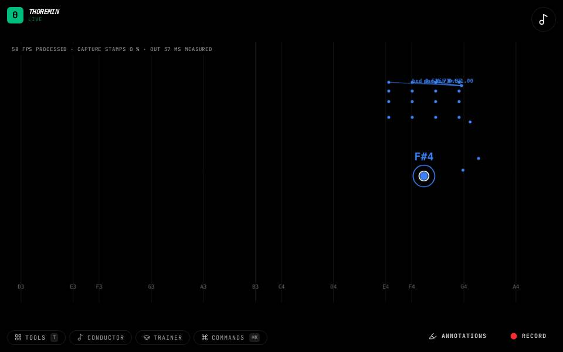
Finger FX
Hold a hand up so all your fingers show.

Finger Gate
Hold a hand up. Touch the index finger to the thumb to make a sound.
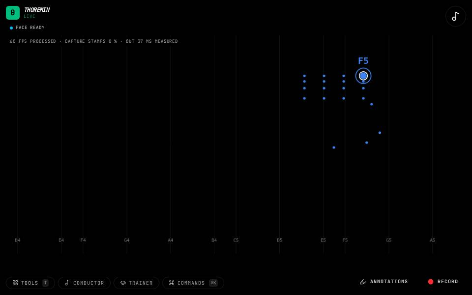
Glass Bells
Look at the camera and change your expression: smile, open your mouth, raise your brows.
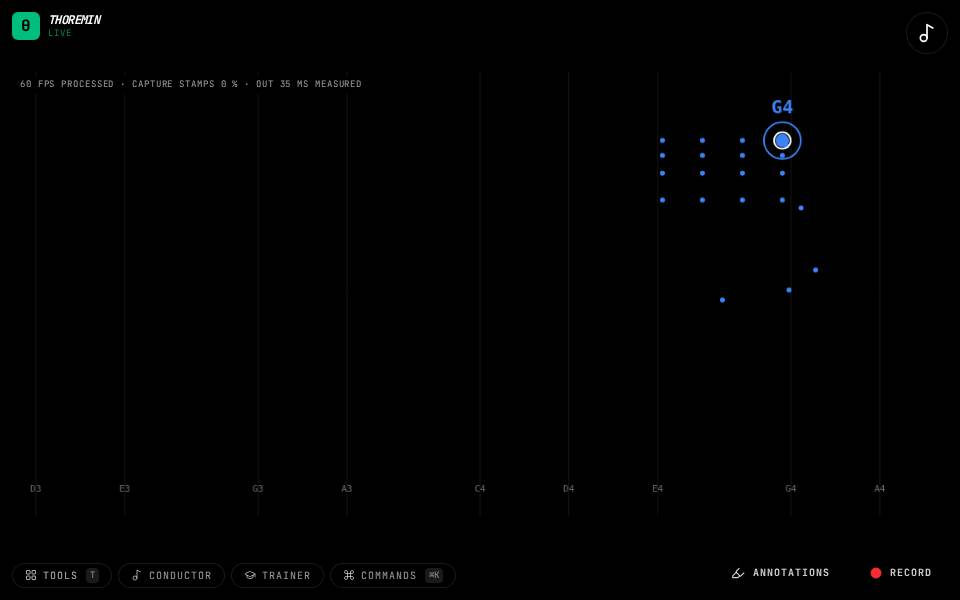
Hand-shape Chords
Make a hand shape and hold it a moment: an open hand, a fist, a pointing finger or a pinch.
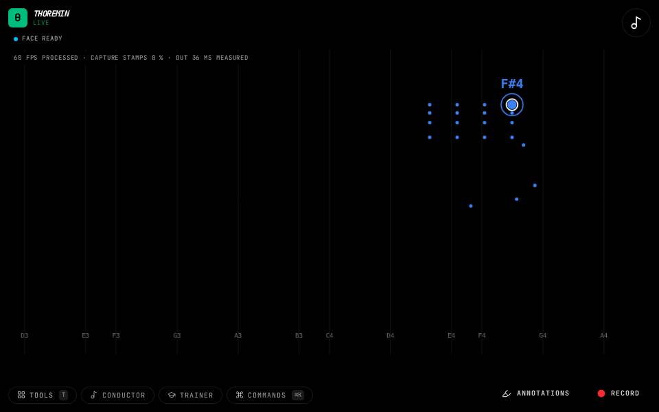
Head Chords
Turn your head slowly from left to right to move through the key's chords.

Open Air Pad
Move a hand to play notes on a soft pad.
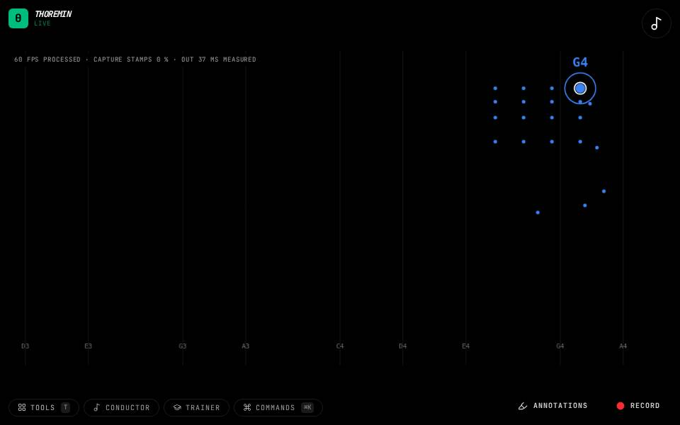
Pentatonic
Allow the camera, then tap anywhere to start the sound.
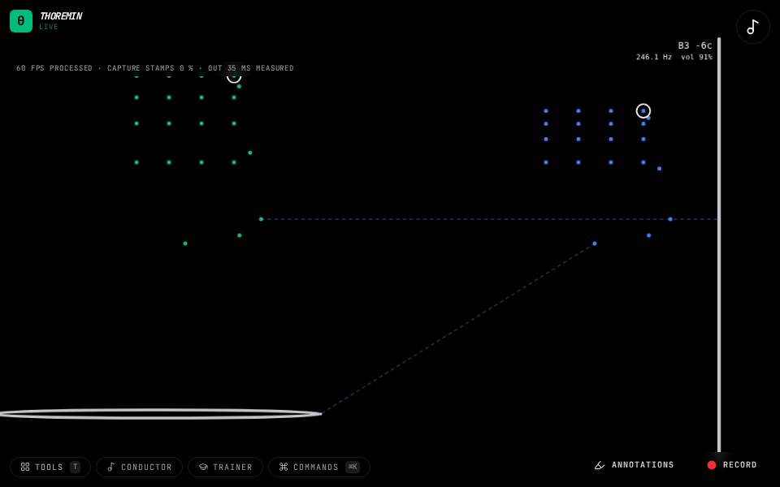
Physical Theremin
Bring your right hand toward the rod on the right of the video: the closer, the higher the pitch.

Pitch Bender
Play a note by moving your hand.
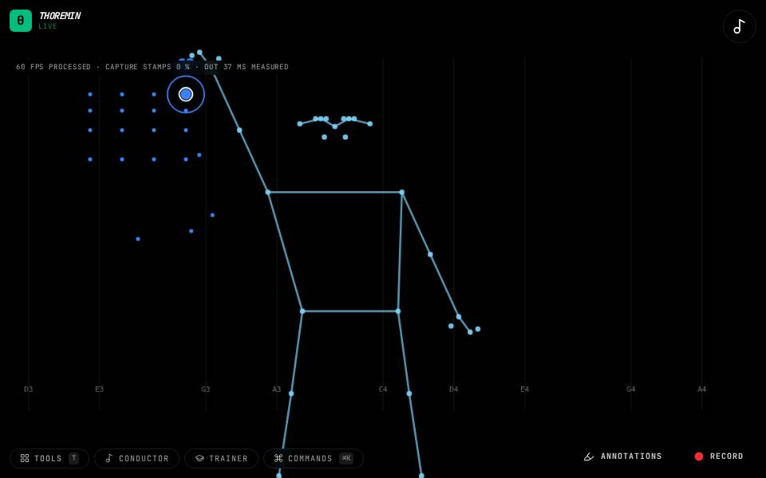
Pose Chords
Stand back so the camera sees your whole body.
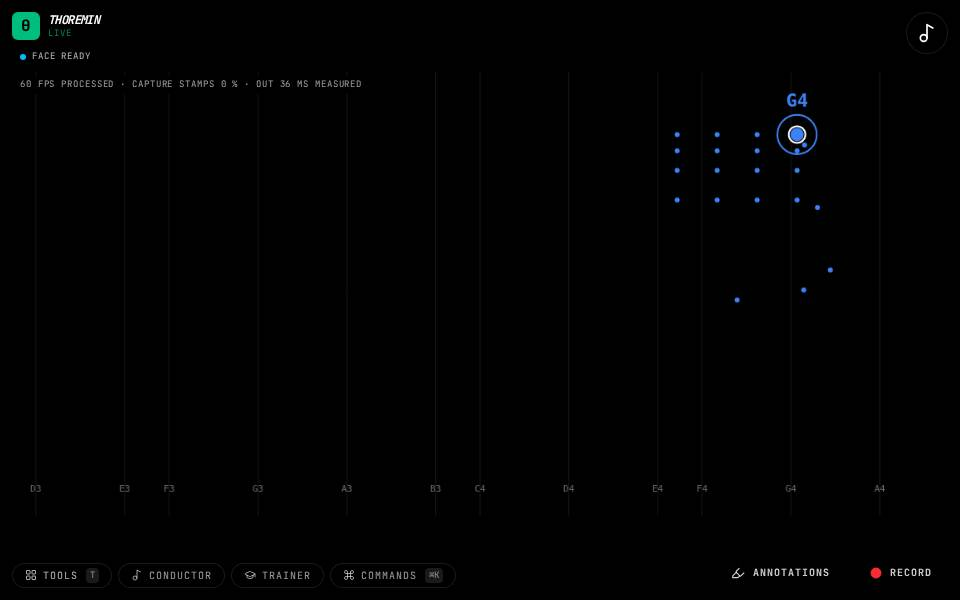
Pulse Organ
Look at the camera and change your expression.

Split Voices
Raise both hands.
Trigger Octaves
Play notes with your hand.
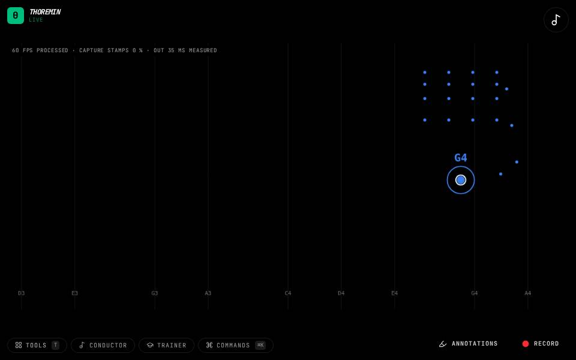
Wrist Theremin
Hold a hand up and move it: the wrist, not the fingertip, plays the note.